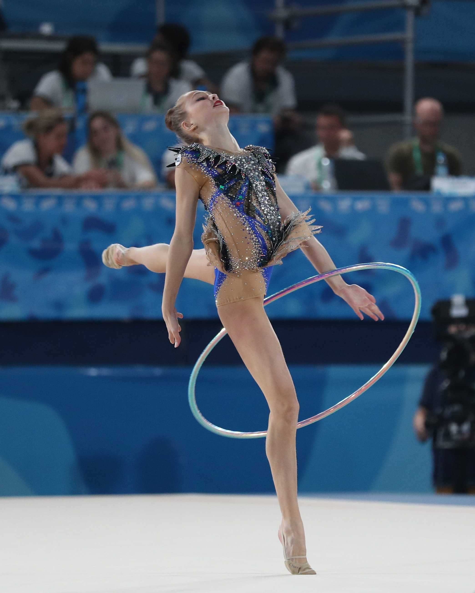
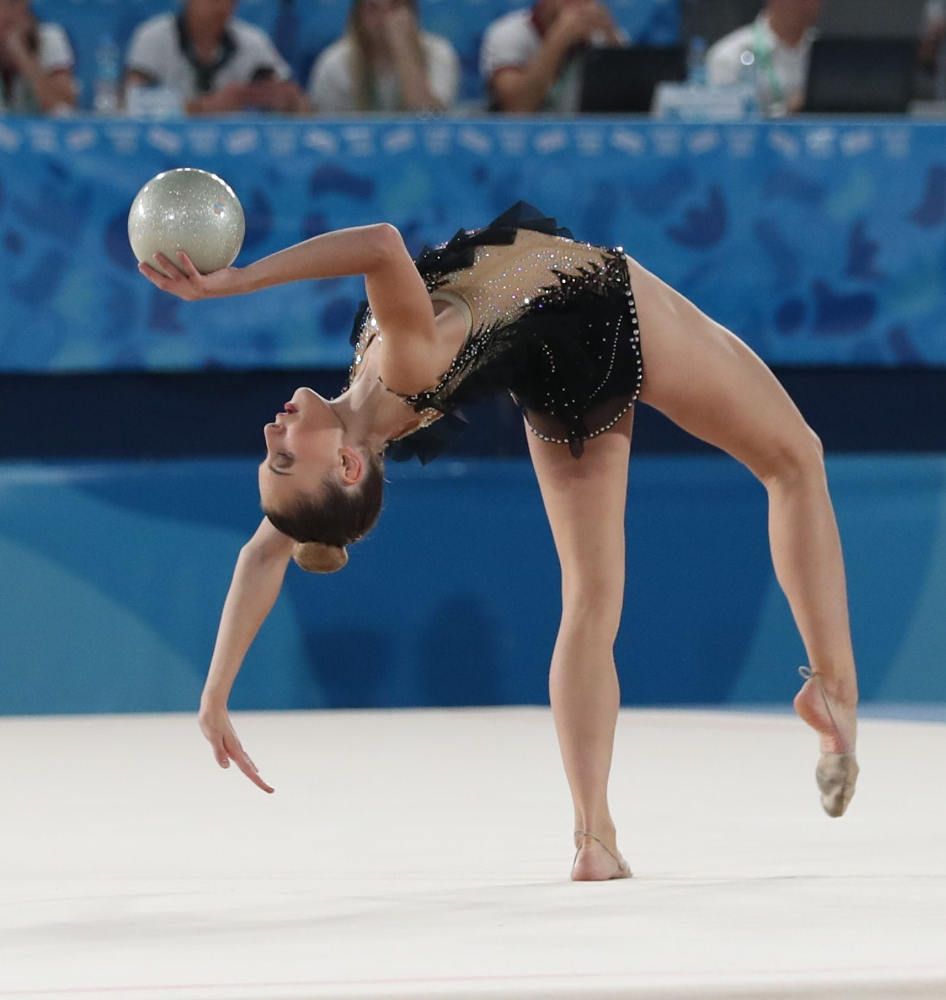
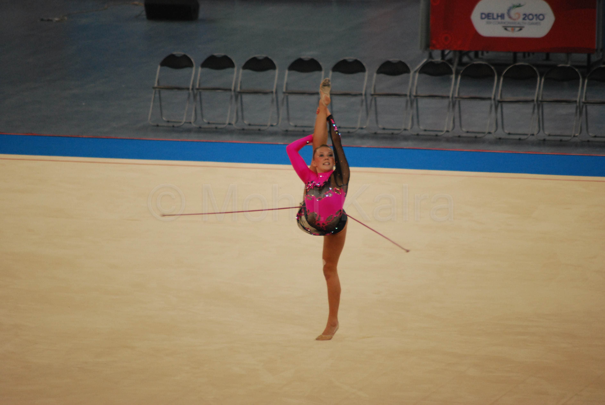
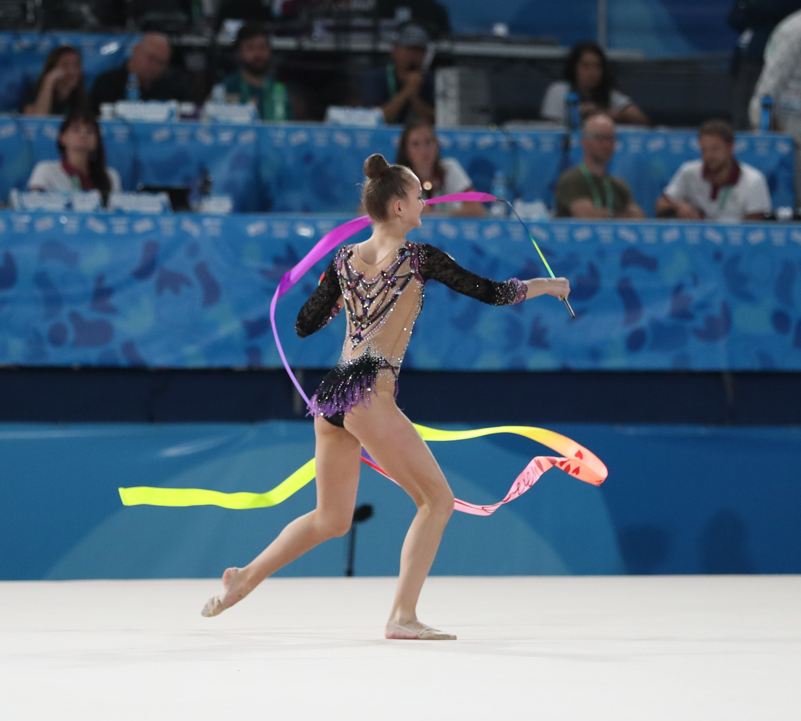

Rhythimic Gymnastics
Rhythmic gymnastics is a beautiful and graceful sport that combines dance, gymnastics, and ballet with the use of various hand-held apparatuses such as hoops, balls, ropes, and ribbons. It requires a high level of flexibility, coordination, and balance, as well as artistic expression and musicality. Rhythmic gymnasts perform routines that showcase their skills and creativity, often accompanied by music that enhances their movements. It is a sport that requires both physical and mental discipline and is enjoyed by athletes and spectators alike.
Hoop
The hoop is one of the hand-held apparatuses used in rhythmic gymnastics. It is a circular hoop made of plastic, typically 80-90 centimetres in diameter. Rhythmic gymnasts use the hoop in their routines to perform a variety of movements and tricks, such as spins, throws, and catches, that demonstrate their flexibility, coordination, and artistic expression.

Ball
In rhythmic gymnastics, the ball is another hand-held apparatus used in routines. It is a small, lightweight ball made of rubber or synthetic material, typically 18-20 centimetres in diameter. Rhythmic gymnasts use the ball to perform a variety of movements and tricks, such as throws, catches, and balances, that demonstrate their grace, precision, and control.

Rope
The rope is also a hand-held apparatus used in rhythmic gymnastics routines. It is a long, slender rope made of hemp or synthetic material, typically 2.5-3 meters in length. Rhythmic gymnasts use the rope to create shapes and patterns, as well as to perform jumps, swings, and rotations, that showcase their strength, flexibility, and coordination.

Ribbon
Ribbon is another hand-held apparatus used in rhythmic gymnastics routines. It is a long, thin ribbon made of satin or similar material, typically 4-6 meters in length. Rhythmic gymnasts use the ribbon to create flowing movements and patterns that showcase their grace, fluidity, and control. Like the rope, the ribbon requires a great deal of skill and practice to master.

Clubs
The clubs are one of the five apparatuses used in rhythmic gymnastics. They are typically made of plastic and are about 40-50 cm in length. The gymnast uses the clubs to perform a variety of movements, including throws, catches, and rolls.

How Rhythimic Gymnastics is judged
Rhythmic gymnastics is judged based on a combination of technical skill and artistic expression. Judges evaluate the execution of each routine, including the difficulty and precision of the movements, as well as the overall performance, such as the gymnast's expression, musicality, and creativity. Points are deducted for mistakes, such as dropping an apparatus or losing balance. For more rules on Rhythmic Gymnastics, check out their code of points!